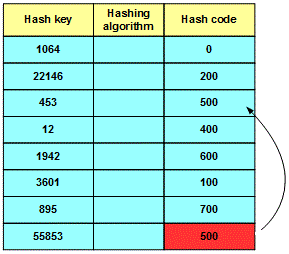

<div id="jsn-maincontent" class="span9 order1 row-fluid">
  <div id="jsn-maincontent_inner">
    <div id="jsn-centercol">
      <div id="jsn-centercol_inner">
        <div id="jsn-mainbody-content" class="jsn-hasmainbody">
          <div id="jsn-mainbody-content-inner1">
            <div id="jsn-mainbody-content-inner2">
              <div id="jsn-mainbody-content-inner3">
                <div id="jsn-mainbody-content-inner4" class="row-fluid">
                  <div id="jsn-mainbody-content-inner" class="span12 order1">
                    <div id="jsn-mainbody">
                      <div id="system-message-container"></div>

                      <div
                        class="item-page"
                        itemscope
                        itemtype="https://schema.org/Article"
                      >
                        <meta itemprop="inLanguage" content="en-GB" />

                        <div itemprop="articleBody">
                          <p></p>
                          <h1 style="text-align: center">
                            Hash tables in more detail
                          </h1>
                          <p class="NormalContent">
                            <strong
                              >Introduction<strong><br /></strong></strong
                            >We can store data in a number of different types of
                            data structure. One kind of data structure involves
                            creating 'hash tables'. Hash tables involve using a
                            maths formula known as a 'hashing algorithm' to turn
                            data that you want to store (the 'hash key') into a
                            set of numbers (the 'hash code'). What we end up
                            with a table of pairs of data, each pair being made
                            up of a hash key and a hash code. The reason that
                            this is done is that it is a lot quicker to search
                            through hash codes and then find the corresponding
                            hash key than it is searching through the hash keys
                            themselves.&nbsp;
                          </p>

                          <p>
                            <span style="line-height: 1.5"
                              >We can summarise the process of producing a hash
                              table by applying a hashing algorithm to hash keys
                              to produce a sets of hash codes using a
                              diagram.&nbsp;</span
                            >
                          </p>
                          <p>
                            <span style="line-height: 1.5"
                              ><strong
                                >&nbsp;</strong
                              ></span
                            >
                          </p>
                          <p>
                            <span style="line-height: 1.5"
                              >Using our pairs of data in the hash table, we can
                              easily search for a hash code and get back the
                              corresponding hash key. We can also see check to
                              see if some data is in the table. For example, we
                              could apply the hashing algorithm to United
                              Kingdom to produce a hash code of 8. We can then
                              easily and quickly search through the table of
                              hash codes, to see that 8 doesn't exist.</span
                            >
                          </p>
                          <p>
                            <span style="line-height: 1.5"
                              ><strong>Creating a hash table</strong><br />Let
                              us assume that the hashing algorithm is 100 *
                              (hash key MOD 8) we can work out the hash codes
                              for a set of data using this algorithm. We will
                              use numbers for our hash keys but we could easily
                              be using ASCII codes for data instead. Just to
                              remind you, MOD is the remainder after you have a
                              divided a number a whole number of times. For
                              example, 12 MOD 8 = 4 (because 8 goes into 12 once
                              with a remainder of 4). 26 MOD 8 = 2 (because 8
                              goes into 26 three times with a remainder of
                              2).</span
                            >
                          </p>
                          <p>
                            <span style="line-height: 1.5"
                              ></span>
                          </p>
                          <p>
                            <span style="line-height: 1.5"
                              >To check if some data is in a file, you would
                              simply apply the hashing algorithm to the data and
                              then check the hash codes. For example, to check
                              to see if 3528 is in a data file, you would
                              calculate 100 * (3531 MOD 8) to get 300. You then
                              check if 300 in your set of hash codes. 300
                              doesn't exist so the data item 3531 is not in your
                              file.</span
                            >
                          </p>
                          <p>
                            <span style="line-height: 1.5"
                              >This may seem a long-winded way of going about
                              searching through data but creating a set of
                              simple hash code numbers from a set of textual
                              data, for example, can really speed things up
                              because computers are very good at indexing
                              through huge sets of numbers and checking them,
                              compared to the process of checking through random
                              data.</span
                            >
                          </p>
                          <p>
                            <span style="line-height: 1.5"
                              ><strong>Collisions</strong><br />You may have
                              already started to spot a potential problem! Look
                              at the following table, which is the same as the
                              above one, except a further piece of data has been
                              added.</span
                            >
                          </p>
                          <p>
                            <span style="line-height: 1.5"
                              ></span>
                          </p>
                          <p>
                            <span style="line-height: 1.5"
                              >When we calculated the hash code for 55853, we
                              got the hash code 500, which was already being
                              used. This is called a collision and has to be
                              dealt with because if two pieces of data have the
                              same hash code, if will greatly slow down any
                              processing we do. There are lots of different ways
                              of dealing with this problem.</span
                            >
                          </p>
                          <p>
                            <span style="line-height: 1.5"
                              ><strong>Method number 1 - linear probing</strong
                              ><br />The simplest way is to calculate the hash
                              code, and then if it is taken, we start searching
                              in a linear fashion from that hash code, until we
                              find a free one. The hash key is then assigned
                              that hash code. If we wanted to store the data
                              55853 in our table, for example, we would:</span
                            >
                          </p>
                          <p style="margin-left: 30px">
                            <strong
                              ><span style="line-height: 1.5"
                                >+ calculate the hash code for it to get 500<br /></span
                              ><span style="line-height: 1.5"
                                >+ we would see that 500 was already taken<br />+
                                we would start checking 501, 502, 503, 504 etc
                                until we found the first free one<br />+ in this
                                case, the first free hash code is 501<br />+ the
                                hash key 55853 would then be assigned the hash
                                code 501.&nbsp;</span
                              ></strong
                            >
                          </p>
                          <p>
                            <strong style="line-height: 16.3636360168457px"
                              >Method number 2 - hash key re-hashing</strong
                            ><br style="line-height: 16.3636360168457px" /><span
                              style="line-height: 16.3636360168457px"
                              >Another method we could use is to re-hash the
                              hash key if there is a collision using a different
                              hashing algorithm or even a set of different
                              hashing algorithms. As long as the same procedure
                              is always followed, you will always generate a
                              unique hash code eventually, and will always be
                              able to find the data. For example, we might use
                              <strong>12 * (6 + hash key MOD 6)</strong> if
                              <strong>100 * (hash key MOD 8)</strong> produced a
                              collision. So if we wanted to store 55853, we get
                              a hash code of 55853 using our first hashing
                              algorithm, and this is a collision. Using
                              <strong style="line-height: 16.3636360168457px"
                                >12 * (hash key MOD 6)&nbsp;</strong
                              >we get 132 so that is the hash code 55853 is
                              assigned to in the hash table.
                            </span>
                          </p>
                          <p>
                            <span style="line-height: 16.3636360168457px"
                              >This method is maintains the fast-access
                              characterisitcs of hashing tables so long as the
                              number of collisions isn't too great.</span
                            >
                          </p>
                          <p>
                            <span style="line-height: 16.3636360168457px"
                              ><strong>Method number 3 - daisy chaining</strong
                              ><br />If there is a collision, you simply start
                              daisy chaining all of the hash keys that share a
                              hash code to that hash code using pointers in a
                              linked list. If you need to find some data, you
                              calculate the hash code and then do a linear
                              search through the linked list. We can see this in
                              the diagram below. All the data items in the
                              linked list have the same hash code so a linked
                              list has been created from them.</span
                            >
                          </p>
                          <p>
                            
                          </p>
                          <p>
                            <span style="line-height: 16.3636360168457px"
                              >Linked lists are relatively slow data access
                              structures so this might only be suitable when
                              there is a limited number of collisions. However,
                              you can have an unlimited number of extra data
                              items in your linked list.</span
                            >
                          </p>
                          <p>
                            <strong style="line-height: 16.3636360168457px"
                              >Method number 4 - overflow areas</strong
                            ><br style="line-height: 16.3636360168457px" /><span
                              style="line-height: 16.3636360168457px"
                              >If there is a collision, you could simply jump to
                              a special area reserved for collisions and then
                              get the first available hash code from that area.
                              This is a relatively fast method and doesn't
                              complicate the main table of data. You have to
                              guess in advance how much space to allow,
                              however.</span
                            >
                          </p>
                          <p
                            style="
                              margin-top: 10px;
                              line-height: 16.3636360168457px;
                            "
                          >
                            <strong>Good hashing algorithms</strong
                            ><br />Creating a hash file is an excellent way of
                            creating a fast access file structure. You do need,
                            of course, a direct access storage&nbsp;device, not
                            a magnetic tape, for example. You also need to
                            ensure that you have a 'good' hashing algorithm. The
                            ones discussed above are not so good because they
                            will generate lots of collisions, and each collision
                            is something that a program has to deal with. That
                            means time is used up and processing is slowed down.
                            This may not seem important when you only have a few
                            hundred records, but when you have a few hundred
                            million records, it can mean the difference between
                            seeing the results on the screen in a second or
                            seeing the results on the screen in a few minutes,
                            while you wait!
                          </p>
                          <p
                            style="
                              margin-top: 10px;
                              line-height: 16.3636360168457px;
                            "
                          >
                            You need to design a hashing algorithm that
                            minimises clashes because they slow down access
                            times. A further consideration is the hashing
                            algorithm itself. It mustn’t&nbsp;be so complicated
                            that it takes ages to calculate anything!&nbsp;A
                            good hashing algorithm will:
                          </p>
                          <ul
                            style="
                              margin-bottom: 10px;
                              line-height: 16.3636360168457px;
                            "
                          >
                            <li>
                              always generate the same hash code for the same
                              hash key
                            </li>
                            <li>
                              <span style="line-height: 16.3636360168457px"
                                >be quick to calculate</span
                              >
                            </li>
                            <li>
                              <span style="line-height: 16.3636360168457px"
                                >produce as few collisions as possible by
                                producing a wide, evenly spread out range of
                                hash codes.</span
                              >
                            </li>
                          </ul>
                          <p></p>
                        </div>
                      </div>
                    </div>
                  </div>
                </div>
              </div>
            </div>
          </div>
        </div>
      </div>
    </div>
  </div>
</div>
